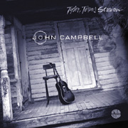

- ATB's Who's Who -
- ATB's Who's Who -
Подростком, пытаясь на автомашине уйти от полицейской погони, попал в автокатастрофу, в результате которой потерял одни глаз и на несколько месяцев оказался прикован к больничной койке. Еще в детстве Джон Кэмпбэлл пробовал играть на гитаре, однако только в эти несколько месяцев, благодаря внезапному одиночеству тяжелобольного, он впервые серьезно занялся музыкой. Более всего его увлек блюз. Полтора десятка лет затем он выступал в небольших клубах и "заведениях с музыкой" родного штата и соседнего Техаса, избегая столиц. Но именно на провинциальной сцене он мог познакомиться со многими выдающимися "вечногастролирующими" блюзмэнами. Поддавшись в конце-концов их уговорам, решает испытать судьбу и в 1985г. переезжает в Нью-Йорк, где также продолжает выступления на клубном уровне, иногда открывая выступления ветеранов чикагского блюза, таких как Джимми Роджерс (Jimmie Rogers), Хьюберт Самлин (Hubert Sumlin), или Пайнтоп Перкинс (Pinetop Perkins). Но чаще ему приходится работать не в клубах и залах, а на перекрестках нью-йоркских улиц и в переходах сабвея. С успехом он представил сольную акустическую программу на традиционалистическом Mississippi Delta Blues фестивале. В одном из нью-йоркских клубов Джон Кэмпбэлл встретил признанного лидера нью-йоркского блюза 80-х, гитариста-виртуоза Ронни Ирла (Ronnie Earl), участника известных групп "Фабьюлос Сандербердз" (Fabulous Thunderbirds) "Румфул Оф Блюз" (Roomful Of Blues). Игра Джона Кэмпбэлла произвела столь сильное впечатление, что Ронни Ирл решился профинансировать и спродюссировать запись его дебютного альбома, которая была сделана в 1988г. за два дня в маленькой провинциальной студии; при участии самого Ронни Ирла, как гитариста и продюсера, и Джерри Портного (Jerry Portnoy), губная гармоника, участника блюзбэнда Мадди Уотерса. Р.Ирл поместил в альбом запись разговора в студии, когда Джон Кэмпбэлл спрашивает у него, стоит ли ему вообще продолжать карьеру музыканта. Дебютный альбом вышел крохотным тиражом на независимой немецкой фирме и практически не имел распространения в США. Джон Кэмпбэлл вернулся выступать в клубы Нью-Йорка, пока три года спустя на его творческом пути не встретился следующий популярный музыкант, загоревшийся желанием популяризировать его творчество. Им оказался композитор и продюссор Деннис Уокер (Dennis Walker), известный как "автор успеха" Роберта Крея (Robert Cray). Репутация Денниса Уокера обеспечила Джону Кэмпбэллу контракт на запись альбома для мэджор-фирмы "Электра" (Electra). Большинство песен этого альбома 1981г., который американская публика сочла "дебютным", написаны Джоном Кэмпбэллом в соавторстве с Денисом Уокером и записаны под аккомпанемент участников блюзбэнда Роберта Крея, чья музыка очевидно является полной противоположностью музыке Джона Кэмпбэлла. Но даже если антураж не везде соответствует, личность Джона Кэмпбэлла остается бесспорной доминантой альбома: его странные песни переносят в рок-формат глубокий ритмический пульс дельта-блюзов, хриплый рыкающий голос возвращает из глубин блюзовой истории тени Чарли Пэттона и Хаулин Вулфа (Howlin' Wolf), а песни затрагивают весь парадоксально широкий круг тем городской жизни от шаловливого разговора по телефону с подружкой до терроризма, случайными жертвами которого становятся играющие дети; от ночные круизов по городе на мотоцикле до мольбы о единственном верующем. Альбом "Единственный верующий" принес первый успех. Следующий альбом "Воя о пощаде" был готов полтора года спустя. И, хотя Деннис Уокер по-прежнему остался соавтором большинства песен и продюссором на его записи, эта работа уже представляет полностью самостоятельное произведение Джона Кэмпбэлла, записанное при поддержке музыкантов его новой группы. Являясь приверженцем акустического гитарного звучания, Джон Кэмпбэлл оставил на свою долю более традиционные стили игры: "слайд" и "нэшионал-стил" - передав функции лидер-электрогитары молодому музыканту Зондеру Кеннеди (Zonder Kennedy), чья игра полностью соответствовала "сумрачному духу" его блюзов. Альбом имел еще больший успех, чем предыдущий. Но летом того же года Джон Кэмпбэлл скончался от сердечного приступа, не успев полностью раскрыть все возможности своего таланта. Отдав четверть века блюзу, Джон Кэмпбэлл лишь на два года обрел действительно широкую известность и признание, оставив после себя только три альбома. Однако этого оказалось достаточно, чтобы утвердить в истории жанра его глубоко индивидуальное понимание и исполнение блюза. ВЭБ™'99
 Дискография:
В сети: |